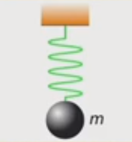

Tronc Commun:
CHIMIE:
**Enoncé 1:
Une cartouche de gaz contient V=700ml de butane C4H10 à l'état liquide.
Dans cet état sa masse volumique est ρ=0,6g/ml.
Lorsque l'on ouvre la cartouche le butane change d'état physique et on le récupère à l'état gazeux.
1/ Calculer la masse de butane liquide dans la cartouche.
2/ Quelle est la quantité de matière de butane dans la cartouche?
3/ Quel volume total de gaz peut-on espérer recueillir?
Données: M(C)==12g/mol; M(H)=1g/ml; M(O)=16g/ml
NA=6,02.1023 mol-1 ;Volume molaire V=24l/mol.
Solution 1:*Notion de mole..
**Enoncé 2:
Par définition,un vinaigre de 6° contient 6g d'acide acétique C2H4O2
dans 100g de vinaigre.
1/ Calculer la quantité d'acide acétique n contenu dans 100g de vinaigre à 6°.
2/ Calculer le volume V d'acide acétique contenu dans 100g de ce vinaigre.
Données: Masse volumique de l'acide acétique:
ρ=1,05g/L ; M(C)=12g/mol ; M(H)=1g/mol ; M(O)=16g/mol.
(Solution 2):*Masse molaire et Mole .
**Enoncé 3:
Le chloroforme est une substance anésthésiante dans les opérations chirurgicales.
La molécule du chloroforme est constituée,uniquement du carbone,du chlore et d'hydrogène.
Ses pourcentages atomiques en chlore et en carbone sont 60% et 20%.
On considère que la formule brute de cette molécule est de forme CxHyClz.
Avec x,y et z des nombres entiers.
1/ Trouver la relation entre x,y et z .Peut-on déduire ses valeurs?.
2/ La molécule de chloroforme ne contient qu'un seul atome de carbone .Déterminer les valeurs de x,y et z.
3/ Proposer une représentation de Lewis pour la molécule de chloroforme.
4/ Proposer une structure géométrique de la molécule.
(Solution 3):*La géométrie de la molécule chloroforme. .
**Enoncé 4:
Déterminer la compposition(nombre de protons,de neutrons et des électrons) des atomes suivants:
Nombre de masse: (58)Ni (9)Be (20)Ne (208)Pb (22)Ne (60)Ni (31)P (75)As (62)Ni
Données: Z(Be)=4 Z(Ne)=10 Z(P)=15 Z(Ni)=28 Z(As)=33 Z(Pb)=82
(Solution 4:)*Composition d' atome...
PHYSIQUE:
**Enoncé 1:
Quand on suspend une masse de 0,2kg à l'extrémité d'un ressort de raideur K=100N/m.
sa longueur finale est 12cm ,quand on suspend une masse de 0,7kg, sa longueur finale est 17cm.

1- Donner le bilan des forces exercées sur la masse.
2- Déterminer la longueur initiale du ressort.